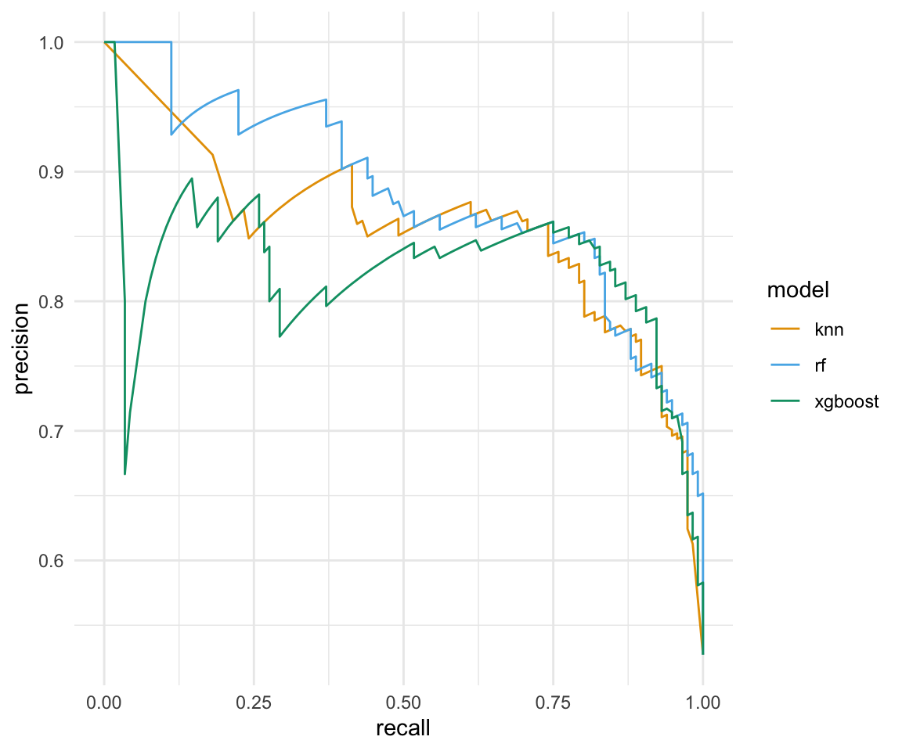

pacman::p_load(tidyverse, tidymodels, magrittr,
janitor, xgboost, ranger, kknn,
see, conflicted)
conflict_prefer("select", "dplyr")
conflict_prefer("filter", "dplyr")
conflict_prefer("mutate", "dplyr")
conflict_prefer("extract", "magrittr")
conflict_prefer("set_names", "magrittr")
##
set.seed(20234534)57 Vergleich von Algorithmen
Version vom June 14, 2023 um 09:29:32
In diesem Kapitel wollen wir drei ausgewählte Algorithmen miteinander vergleichen. Ich habe hier den \(k\)-NN Algorithmus, den Random Forest Algorithmus und den xgboost Algorithmus ausgewählt. Das ist eigentlich eine relativ willkürliche Auswahl. Aber dann haben wir drei Modelle, die wir mit statistischen Maßzahlen vergleichen können. Ich rechne die Algorithmen hier relativ flott durch, wenn du mehr über die Algorithmen wissen willst, schau bitte dann in die entsprechenden Kapitel. Hier fallen also viele Dinge einfach so aus dem Himmel. Mir geht es aber auch am Ende darum, einmal die drei Algorithmen zu vergleichen.
Häufig stellt sich natürlich die Frage, welche der statistischen Maßzahlen soll ich denn nun nehmen? Wie immer ist die Antwort, kommt drauf an. Ich würde dir empfehlen, die ROC Kurve für die Klassifikation zu nehmen. Dann wird auch häufig die Accuarcy berichtet. Danach wird es dann schon schwammiger und es kommt dann auch darauf an an wen du berichtest. Schreibst du also deine Abschlussarbeit, dann musst du dich mit deinen Betreuern abstimmen. Bei einer wissenschaftlichen Veröffentlichung würde ich in den anderen Veröffentlichungen des Journals schauen, was dort im Rahmen des maschinellen Lernens für Gütekriterien veröffentlicht werden. In diesem Kapitel gehen wir jedenfalls eine Menge Maßzahlen für die Klassifikation einmal durch.
Für viele der Maßzahlen gibt es auf Wikipedia zur Konfusionamtrix weitreichende Erklärungen. Ich werde mich hier kurz halten und die Werte anhand eines Beispiels nochmal herleiten. Wenn du dann mehr zu den einzelnen Gütekriterien wissen willst, musst du nochmal extern nachlesen.
Tuning und Resampling?
In diesem Kapitel werde ich auf das Tuning und das Resampling verzichten. Du findest aber in den Anwendungskapiteln nochmal den R Code für das Tuning und das Resampling. Wenn du willst, kannst und solltest du auch die beiden Schritte noch in den Code mit dazwischen schalten. Auf der Webseite Tidymodels - A predictive modeling case study findest du nochmal Hilfe dazu.
57.1 Genutzte R Pakete
Wir wollen folgende R Pakete in diesem Kapitel nutzen.
Am Ende des Kapitels findest du nochmal den gesamten R Code in einem Rutsch zum selber durchführen oder aber kopieren.
57.2 Daten
In diesem Kapitel wolle wir uns aber mal auf einen echten Datensatz anschauen und sehen wie sich drei Algorithmen auf diesem Daten so schlagen. Welcher Algorithmus ist am besten für die Klassifikation geeignet? Wir nutzen daher hier einmal als echten Datensatz den Gummibärchendatensatz. Als unser Label nehmen wir das Geschlecht gender. Dabei wollen wir dann die weiblichen Studierenden vorhersagen. Im Weiteren nehmen wir als Prädiktoren die Spalten most_liked, age, semester, und height mit in unsere Analysedaten.
gummi_tbl <- read_excel("data/gummibears.xlsx") %>%
mutate(gender = as_factor(gender),
most_liked = as_factor(most_liked)) %>%
select(gender, most_liked, age, semester, height) %>%
drop_na(gender)Wir dürfen keine fehlenden Werte in den Daten haben. Wir können für die Prädiktoren später die fehlenden Werte imputieren. Aber wir können keine Labels imputieren. Daher entfernen wir alle Beobachtungen, die ein NA in der Variable gender haben. Wir haben dann insgesamt \(n = 522\) Beobachtungen vorliegen. In Tabelle 61.3 sehen wir nochmal die Auswahl des Datensatzes in gekürzter Form.
| gender | most_liked | age | semester | height |
|---|---|---|---|---|
| m | lightred | 35 | 10 | 193 |
| w | yellow | 21 | 6 | 159 |
| w | white | 21 | 6 | 159 |
| w | white | 36 | 10 | 180 |
| m | white | 22 | 3 | 180 |
| m | white | NA | NA | NA |
| … | … | … | … | … |
| w | yellow | 14 | 0 | 173 |
| w | none | 11 | 0 | 159 |
| w | darkred | 12 | 0 | 158 |
| w | darkred | 12 | 0 | 158 |
| w | darkred | 12 | 0 | 156 |
| w | darkred | 12 | 0 | 158 |
Unsere Fragestellung ist damit, können wir anhand unserer Prädiktoren männliche von weiblichen Studierenden unterscheiden und damit auch klassifizieren? Wir splitten dafür unsere Daten in einer 3 zu 4 Verhältnis in einen Traingsdatensatz sowie einen Testdatensatz auf. Da wir aktuell nicht so viele Beobachtungen in dem Gummibärchendatensatz haben, möchte ich mindestens 100 Beobachtungen in den Testdaten. Deshalb kommt mir der 3:4 Split sehr entgegen.
gummi_data_split <- initial_split(gummi_tbl, prop = 3/4)Wir speichern uns jetzt den Trainings- und Testdatensatz jeweils separat ab. Die weiteren Modellschritte laufen alle auf dem Traingsdatensatz, wie nutzen dann erst ganz zum Schluß einmal den Testdatensatz um zu schauen, wie gut unsere trainiertes Modell auf den neuen Testdaten funktioniert.
gummi_train_data <- training(gummi_data_split)
gummi_test_data <- testing(gummi_data_split)Nachdem wir die Daten vorbereitet haben, müssen wir noch das Rezept mit den Vorverabreitungsschritten definieren. Wir schreiben, dass wir das Geschlecht gender als unser Label haben wollen. Daneben nehmen wir alle anderen Spalten als Prädiktoren mit in unser Modell, das machen wir dann mit dem . Symbol. Da wir noch fehlende Werte in unseren Prädiktoren haben, imputieren wir noch die numerischen Variablen mit der Mittelwertsimputation und die nominalen fehlenden Werte mit Entscheidungsbäumen. Dann müssen wir noch alle numerischen Variablen normalisieren und alle nominalen Variablen dummykodieren. Am Ende werde ich nochmal alle Variablen entfernen, sollte die Varianz in einer Variable nahe der Null sein.
gummi_rec <- recipe(gender ~ ., data = gummi_train_data) %>%
step_impute_mean(all_numeric_predictors()) %>%
step_impute_bag(all_nominal_predictors()) %>%
step_range(all_numeric_predictors(), min = 0, max = 1) %>%
step_dummy(all_nominal_predictors()) %>%
step_nzv(all_predictors())
gummi_rec %>% summary()# A tibble: 5 × 4
variable type role source
<chr> <list> <chr> <chr>
1 most_liked <chr [3]> predictor original
2 age <chr [2]> predictor original
3 semester <chr [2]> predictor original
4 height <chr [2]> predictor original
5 gender <chr [3]> outcome originalIm Folgenden vergleichen wir einmal drei Algorithmen miteinander. Daher halten wir den Code für die Durchführung sehr kurz.
57.3 \(k\)-NN Algorithm
Huch, der Code ist aber sehr kurz…
In diesem Teil halte ich den R Code sehr kurz, wenn du mehr über den \(k\)-NN Algorithmus wissen willst, schaue bitte in Kapitel 58.
Für den \(k\)-NN Algorithmus nutzen wir \(k=11\) Nachbarn. Mehr brauchen wir hier nicht angeben.
knn_mod <- nearest_neighbor(neighbors = 11) %>%
set_engine("kknn") %>%
set_mode("classification") Dann nehmen wir das Modell für den \(k\)-NN Algorithmus und verbinden das Modell mit dem Rezept für die Gummibärchendaten in einem Workflow.
knn_wflow <- workflow() %>%
add_model(knn_mod) %>%
add_recipe(gummi_rec)Nun können wir auch schon den Fit des Modells rechnen und in einem Rutsch den Fit auch gleich auf die Testdaten anwenden.
knn_aug <- knn_wflow %>%
parsnip::fit(gummi_train_data) %>%
augment(gummi_test_data)Mehr wollen wir hier auch nicht. Wir brauchen nur die Prädiktion, da wir hier ja nur das Konzept der Modellvergleiche einmal durchgehen wollen.
57.4 Random Forest
Huch, der Code ist aber sehr kurz…
In diesem Teil halte ich den R Code sehr kurz, wenn du mehr über den Random Forest Algorithmus wissen willst, schaue bitte in Kapitel 59.4.
Für den Random Forest Algorithmus nutzen wir drei Variablen je Baum (mtry = 3), mindestens zehn Beobachtungen je Knoten (min_n = 10) sowie eintausend gewachsene Bäume in unserem Wald (trees = 1000). Mehr brauchen wir hier nicht angeben.
ranger_mod <- rand_forest(mtry = 3, min_n = 10, trees = 1000) %>%
set_engine("ranger") %>%
set_mode("classification")Dann nehmen wir das Modell für den Random Forest Algorithmus und verbinden das Modell mit dem Rezept für die Gummibärchendaten in einem Workflow.
ranger_wflow <- workflow() %>%
add_model(ranger_mod) %>%
add_recipe(gummi_rec)Nun können wir auch schon den Fit des Modells rechnen und in einem Rutsch den Fit auch gleich auf die Testdaten anwenden.
ranger_aug <- ranger_wflow %>%
parsnip::fit(gummi_train_data) %>%
augment(gummi_test_data ) Mehr wollen wir hier auch nicht von dem Random Forest Algorithmus. Wir brauchen nur die Prädiktion, da wir hier ja nur das Konzept der Modellvergleiche einmal durchgehen wollen.
57.5 xgboost
Huch, der Code ist aber sehr kurz…
In diesem Teil halte ich den R Code sehr kurz, wenn du mehr über den xgboost Algorithmus wissen willst, schaue bitte in Kapitel 59.5.
Für den xgboost Algorithmus nutzen wir drei Variablen je Baum (mtry = 3), mindestens zehn Beobachtungen je Knoten (min_n = 10) sowie eintausend gewachsene Bäume in unserem Wald (trees = 1000). Mehr brauchen wir hier nicht angeben.
xgboost_mod <- boost_tree(mtry = 3, min_n = 10, trees = 1000) %>%
set_engine("xgboost") %>%
set_mode("classification")Dann nehmen wir das Modell für den xgboost Algorithmus und verbinden das Modell mit dem Rezept für die Gummibärchendaten in einem Workflow.
xgboost_wflow <- workflow() %>%
add_model(xgboost_mod) %>%
add_recipe(gummi_rec)Nun können wir auch schon den Fit des Modells rechnen und in einem Rutsch den Fit auch gleich auf die Testdaten anwenden.
xgboost_aug <- xgboost_wflow %>%
parsnip::fit(gummi_train_data) %>%
augment(gummi_test_data ) Das war jetzt der dritte und letzte Algorithmus. Wir brauchen auch hier nur die Prädiktion, da wir hier ja nur das Konzept der Modellvergleiche einmal durchgehen wollen.
57.6 Vergleich der Modelle
In der folgenden Liste haben wir einmal alle vorhergesagten Werte der drei Algorithmen zusammengefügt. Wir können jetzt auf der Liste aug_lst mit der Funktion map() aus dem R Paket purrr schnell rechnen. Anstatt für jedes der Objekte in der Liste einzeln den Code anzugeben, können wir den Code über die Funktion map() bündeln.
aug_lst <- lst(knn = knn_aug,
rf = ranger_aug,
xgboost = xgboost_aug)Im folgenden Schritt berechnen wir für alle Algorithmen die Konfusionsmatrix als eine 2x2 Tabelle. Wir schauen uns gleich einmal die Konfusionsmatrix nur für den xgboost Algorithmus an. Auf der Konfusionsmatrix können wir viele Gütekriterien für die Klassifikation berechnen.
conf_mat_lst <- aug_lst %>%
map(~conf_mat(.x, gender, .pred_class))Und diese große Anzahl an Gütekriterien berechnen wir dann auch gleich. Die Funktion summary() gibt uns die Gütekriterien für alle Algorithmen wieder. Wir müssen dann noch etwas aufräumen und die Wiedergaben dann passend zusammenfassen, so dass wir eine schöne Tabelle wiedergegeben kriegen. So das sind jetzt aber ganz schön viele Maßzahlen.
conf_mat_lst %>%
map(summary) %>%
map(~select(.x, .metric, .estimate)) %>%
reduce(left_join, by = ".metric") %>%
set_names(c("metric", "knn", "rf", "xboost")) %>%
mutate(across(where(is.numeric), round, 3))Warning: There was 1 warning in `mutate()`.
ℹ In argument: `across(where(is.numeric), round, 3)`.
Caused by warning:
! The `...` argument of `across()` is deprecated as of dplyr 1.1.0.
Supply arguments directly to `.fns` through an anonymous function instead.
# Previously
across(a:b, mean, na.rm = TRUE)
# Now
across(a:b, \(x) mean(x, na.rm = TRUE))# A tibble: 13 × 4
metric knn rf xboost
<chr> <dbl> <dbl> <dbl>
1 accuracy 0.779 0.771 0.794
2 kap 0.557 0.542 0.586
3 sens 0.778 0.794 0.762
4 spec 0.779 0.75 0.824
5 ppv 0.766 0.746 0.8
6 npv 0.791 0.797 0.789
7 mcc 0.557 0.543 0.587
8 j_index 0.557 0.544 0.585
9 bal_accuracy 0.779 0.772 0.793
10 detection_prevalence 0.489 0.511 0.458
11 precision 0.766 0.746 0.8
12 recall 0.778 0.794 0.762
13 f_meas 0.772 0.769 0.78 Um jetzt zu verstehen, wie scih diese Maßzahl jetzt alle berechnen ziehen wir uns einmal die Konfusionsmatrix für den xgboost Algorithmus aus dem Objekt conf_mat_lst raus. Wir sehen, dass wir die meisten Männer und Frauen richtig klassifiziert haben. Neben dieser Information, brauchen wir noch die Informationen der Randsummen.
pluck(conf_mat_lst, "xgboost") Truth
Prediction m w
m 48 12
w 15 56Wir können berechnen, dass wir in den Testdaten (Truth) dann 58 Männer vorliegen haben sowie 61 Frauen. In den vorhergesagten Daten (Prediction) haben wir dann 63 Männer und 56 Frauen. Die beiden Zahlen brauchen wir noch und daher ergänzen wir diese Zahlen dann auch in der Tabelle 57.2 (b).
Tabelle 57.2— Die theoretische Konfusionsmatrix sowie die ausgefüllte Konfusionmatrix nach dem xgboost Algorithmus.
| Truth | |||
| \(Positiv\) | \(Negativ\) (0) | ||
| \((PP)\) (1) | \((PN)\) (0) | ||
| Prädiktion | \(Positiv\) (1) | \(TP\) | \(FP\) |
| \((P)\) (1) | |||
| \(Negativ\) (0) | \(FN\) | \(TN\) | |
| \((N)\) (0) |
| Truth | |||
| \(Positiv\) (m) | \(Negativ\) (w) | ||
| \((PP = 58)\) (m) | \((PN = 61)\) (w) | ||
| Prädiktion | \(Positiv\) (m) | \(51\) | \(12\) |
| \((P = 63)\) (m) | |||
| \(Negativ\) (w) | \(7\) | \(49\) | |
| \((N = 56)\) (w) |
Wir können auch noch ganz viel mehr Beurteilungskriterien für die Klassifikation in einer Konfusionmatrix berechnen lassen. Wir wollen jetzt aber nur die dreizehn Beurteilungskriterien, die wir von der Funktion summary() berechnet kriegen, einmal durchgehen. Die Frage was du jetzt von den Maßzahlen alles berichten sollst, hängt wiederum davon ab, wenn du die Maßzahlen berichten willst. Die Accuarcy und die ROC Kurven sind sicherlich die wichtigsten Maßzahlen. Der Rest geht eher in die optionale Richtung.
Accuarcy
Die accuracy (deu. Genauigkeit, nicht verwendet) ist der Anteil der Label, die richtig vorhergesagt werden. Das Problem bei der Verwendung der Genauigkeit als Hauptgütekriterium besteht darin, dass sie bei einem starken Klassenungleichgewicht nicht gut funktioniert.
Kappa
Das kap beschreibt Kappa und damit ein ähnliches Maß wie die accuracy. Dabei wird aber Kappa durch die accuarcy normalisiert, die allein durch Zufall zu erwarten wäre. Damit ist Kappa sehr nützlich, wenn eine oder mehrere Klassen große Häufigkeitsverteilungen haben.
Sensitivität
Die sens beschreibt die Sensitivität oder die true positive rate (TPR). Eine Methode die erkrankte Personen sehr zuverlässig als krank (1) erkennt hat eine hohe Sensitivität. Das heißt, sie übersieht kaum erkrankte (1) Personen.
\[ \mbox{Sensitivität} = \mbox{sens} = \cfrac{TP}{TP + FN} = \cfrac{51}{51 + 7} = 0.879 \]
Spezifität
Die spec beschreibt die Spezifität oder die true negative rate (TNR). Eine Methode die gesunde Personen zuverlässig als gesund (0) einstuft, hat eine hohe Spezifität. Das heißt, die Methode liefert in der Regel nur bei Erkrankten ein positives Ergebnis.
\[ \mbox{Spezifität} = \mbox{spec} = \cfrac{TN}{TN + FP} = \cfrac{49}{49 + 12} = 0.803 \]
Positiver prädiktiver Wert
Der ppv beschreibt den positiven prädiktiven Wert (eng. positive predictive value).
\[ \mbox{Positiver prädiktiver Wert} = \mbox{ppv} = \cfrac{TP}{PP} = \cfrac{51}{63} = 0.81 \]
Negativer prädiktiver Wert
Der npv beschreibt den negativen prädiktiven Wert (eng. negative predictive value).
\[ \mbox{Negativer prädiktiver Wert} = \mbox{npv} = \cfrac{TN}{PN} = \cfrac{49}{56} = 0.875 \]
Matthews Korrelationskoeffizienten
Das mcc beschreibt den Matthews Korrelationskoeffizienten (eng. Matthews correlation coefficient). Der Matthews-Korrelationskoeffizient (MCC) ist ein zuverlässiger statistischer Wert, der nur dann einen hohen Wert hat, wenn die Vorhersage in allen vier Kategorien der Konfusionsmatrix (richtig positiv, falsch negativ, richtig negativ und falsch positiv) gute Ergebnisse erzielt. Wir berechnen den Wert hier jetzt nicht, da die Formel insgesamt acht zusammengesetzte Terme aus der Konfusionsmatrix beinhaltet. Für die Berechnung einmal beim Matthews correlation coefficient nachlesen oder aber auch Chicco und Jurman (2020) berücksichtigen.
Youden-J-Statistik
Der j_index beschreibt die Youden-J-Statistik und ist definiert als \(J = sens + spec - 1\). Wenn wir also eine hohe Sensitivität und eine hohe Spezifität haben dann nähert sich \(J\) der Eins an.
\[ \mbox{Youden-J} = \mbox{j index} = sens + spec - 1 = 0.879 + 0.803 - 1 = 0.682 \]
Balancierte Accuarcy
Die bal_accuracy beschreibt die balancierte accuarcy und wird hier in der Funktion als der Durchschnitt von Sensitivität und Spezifität berechnet. Leider hat die balancierte Accuarcy mit der Accuarcy wie oben beschrieben weniger zu tun.
\[ \mbox{Balanced accuracy} = \cfrac{TPR + TNR}{2} = \cfrac{0.879 + 0.803}{2} = 0.841 \]
Entdeckungsprävalenz
Die detection_prevalence Die Entdeckungsprävalenz (eng. detection prevalence) ist definiert als die Anzahl der vorhergesagten positiven Ereignisse (sowohl richtig als auch falsch positiv) geteilt durch die Gesamtzahl der Vorhersagen.
\[ \mbox{Entdeckungsprävalenz} = \cfrac{TP + FP}{TP + FP + FN + TN} = \cfrac{51 + 12}{51 + 12 + 7 + 49} = 0.529 \]
Precision und Recall

Die precision Bei der binären Klassifizierung ist die precision der positiv prädiktive Wert. Damit ist die precision die Anzahl der richtig positiven Ergebnisse geteilt durch die Anzahl aller positiven Ergebnisse, einschließlich derer, die nicht richtig erkannt wurden.
Präzision hilft, wenn die Kosten für falsch positive Ergebnisse hoch sind. Nehmen wir einmal an wir wollen Hautkrebs erkennen. Wenn wir ein Modell mit sehr geringer Präzision haben, teilen wir vielen Patienten mit, dass sie ein Melanom haben, und dies schließt einige Fehldiagnosen ein. Es stehen viele zusätzliche Tests und Stress für die Patienten auf dem Spiel. Wenn die Fehlalarme zu hoch sind, lernen diejenigen, die die Ergebnisse überwachen, sie zu ignorieren, nachdem sie mit Fehlalarmen bombardiert wurden.
\[ \mbox{Precision} = \mbox{Positiver prädiktiver Wert} = \cfrac{TP}{PP} = \cfrac{51}{63} = 0.81 \]
Der recall Bei der binären Klassifizierung ist der recall die Sensitivität. Damit ist der recall die Anzahl der tatsächlich positiven Ergebnisse geteilt durch die Anzahl aller Ergebnisse, die als positiv hätten identifiziert werden müssen.
Der Recall hilft, wenn die Kosten für falsch negative Ergebnisse hoch sind. Was ist, wenn wir einfallende Atomraketen erkennen müssen? Ein falsches Negativ hat verheerende Folgen. Versteh es falsch und wir alle sterben. Wenn falsche Negative häufig sind, wirst du von dem getroffen, was du vermeiden möchten. Ein falsch Negatives ist, wenn du sich entscheidest, das Geräusch eines Zweigs zu ignorieren, der in einem dunklen Wald bricht, und du dann von einem Bären gefressen wirst. Ein falsch Positives Ereignis wäre dann, dass du die ganze Nacht schlaflos in deinem Zelt in kaltem Schweiß aufbleibst und jedem Durcheinander im Wald zuhörst, nur um am nächsten Morgen zu erkennen, dass diese Geräusche von einem Waschbären gemacht wurden. Auch kein Spaß.
\[ \mbox{Recall} = \mbox{Sensitivität} = \cfrac{TP}{TP + FN} = \cfrac{51}{51 + 7} = 0.879 \]
F\(_1\) Score
Die f_meas beschreibt den F\(_1\) Score und damit das harmonische Mittel aus Precision und Recall. Der höchstmögliche Wert eines F\(_1\) Scores ist 1, was perfekte Präzision und Recall bedeutet, und der niedrigstmögliche Wert ist 0, wenn sowohl Präzision als auch Recall null sind. Das heißt, ein guter F1-Score bedeutet, dass du niedrige Fehlalarme und niedrige Falschnegative hast, sodass du echte Ereignisse oder Bedrohungen korrekt identifizieren und nicht durch Fehlalarme gestört wirst.
\[ F_1 = \cfrac{2 \cdot TP}{2 \cdot TP + FP + FN} = \cfrac{2 \cdot 51}{2 \cdot 51 + 12 + 7} = 0.843 \]
ROC & Precision recall Kurven
Wenn wir von der Visualisierung von Klassifikationsergebnissen sprechen, dann kommen wir an der ROC Kurve und der PR Kurve nicht vorbei. Beide Kurven lassen sich ziemlich zügig erstellen. Wir kennen ja schon die Funktion roc_curve() für die ROC Kurve.
In dem Kapitel 29 erfährst du mehr darüber was eine ROC Kurve ist und wie du die ROC Kurve interpretieren kannst.
roc_tbl <- aug_lst %>%
map(~roc_curve(.x, gender, .pred_w, event_level = "second")) %>%
bind_rows(.id = "model")Warning: Returning more (or less) than 1 row per `summarise()` group was deprecated in
dplyr 1.1.0.
ℹ Please use `reframe()` instead.
ℹ When switching from `summarise()` to `reframe()`, remember that `reframe()`
always returns an ungrouped data frame and adjust accordingly.
ℹ The deprecated feature was likely used in the yardstick package.
Please report the issue at <https://github.com/tidymodels/yardstick/issues>.Die PR Kurve, für die Darstellung der Precision und des Recalls können wir dann die Funktion pr_curve() nutzen. Im Gegesatz zu der ROC Kurve wollen wir das die PR Kurve erstmal waagerecht verlauft und am Ende senkrecht nach unten fällt. Die Spitzen und Zacken in der Kurve sind normal und hat mit der Berechnung der beiden Werte zu tun. Wir wollen aber auch hier eine möglichst große Fläche unter der Kurve haben.
pr_tbl <- aug_lst %>%
map(~pr_curve(.x, gender, .pred_w, event_level = "second")) %>%
bind_rows(.id = "model")In der Abbildung 57.2 sind die ROC Kurven und die PR Kurven für die drei Algorithmen nochmal dargestellt. Zum einen sehen wir, dass wir nicht das beste Modell haben. Alle Modelle laufen übereinander und sind sich recht ähnlich. Das Bild wiederholt sich dann auch bei der PR Kurve wie bei der ROC Kurve. Dennoch sind die Algorithmen einigermaßen gut, denn wir haben ja weder eine Kreuzvalidierung noch ein Tuning durchgeführt. Wir bewerten die Modelle als gut, da die Flächen unter der Kurve relativ groß sind. Wenn es ein Modell gibt, was im Verhältnis zu den anderen Modellen abfällt, dann ist es das \(k\)-NN Modell. Das \(k\)-NN Modell hat einen starken Abfall zu Beginn der PR-Kurve.
roc_tbl %>%
ggplot(aes(x = 1 - specificity, y = sensitivity, col = model)) +
theme_minimal() +
geom_path() +
geom_abline(lty = 3) +
scale_color_okabeito()
pr_tbl %>%
ggplot(aes(x = recall, y = precision, col = model)) +
theme_minimal() +
geom_path() +
scale_color_okabeito()

Referenzen
Chicco, Davide, und Giuseppe Jurman. 2020. „The advantages of the Matthews correlation coefficient (MCC) over F1 score and accuracy in binary classification evaluation“. BMC genomics 21 (1): 1–13.